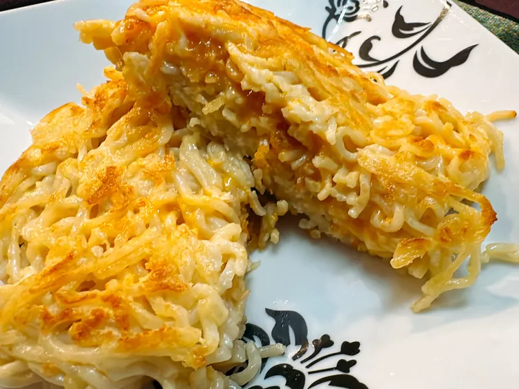

RAMEN GRILLED CHEESE

DESCRIPTION
Have you ever heard of a ramen grilled cheese sandwich, made with ramen but no bread?
I had not heard of it either until I entered the land of TikTok where just about
anything can be found
Prep Time:10 mins
Cook Time:15 mins
Refrigerate Time:15 hrs
Total time:15 24 mins
Servings:1 mins
Yield:1 sandwich1 sandwich
INGREDIENTS
- 1 (3 ounce) package instant ramen noodles
- 1 large egg
- 2 tablespoons freshly grated Parmesan cheese
- 2 slices sharp Cheddar cheese
- 1 tablespoon butter
STEPS
- Bring 2½ cups water to a boil in a small saucepan. Add noodles and cook for 2 minutes.
Add flavor packet, stir, and continue to cook for another 30 seconds, or prepare ramen
according to package directions. Drain off liquid; allow noodles to cool slightly.
- Whip egg in a mixing bowl until yellow and frothy. Stir in Parmesan cheese.
Stir in cooked noodles until completely coated.
- Line a sealable sandwich container with plastic wrap, and press half of ramen noodles
into the lined container. Place another layer of plastic wrap into the container.
Press remaining noodles evenly into the container. Cover and refrigerate until firm,
at least 15 hours.
- Place a skillet over medium-high heat and add a layer of parchment paper.
Add the butter. Remove one piece of ramen “bread” from the container and
place into the skillet.
- Top ramen with 2 slices cheese. Place remaining ramen in skillet;
allow to heat through and become golden. Carefully flip onto the layer that has cheese.
The ramen sandwich is ready when both sides are golden.